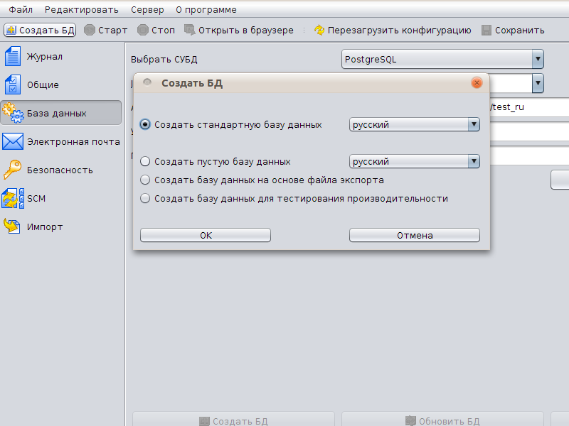

|
<< Click to Display Table of Contents >> Navigation: Rus > Руководство по установке > Установка под Linux > Установка TrackStudio Standalone |
Для того, чтобы настроить и запустить TrackStudio Standalone на сервере с графической оболочкой:
1.Запустите TrackStudio Enterprise Server Manager (sman).
2.В меню нажмите кнопку "Создать БД"
3.В появившемся окне выберите вариант базы данных для инициализации.

4.Нажмите кнопку "ОК"
5.После того, как база данных будет создана, нажмите кнопку Старт, чтобы запустить сервер TrackStudio.
6.Когда сервер запустится, нажмите кнопку Открыть в браузере. Появится окно с адресом, который нужно ввести в ваш браузер.
Используйте следующие учетные записи:
Пользователь |
Группа |
Логин |
Пароль |
Администратор |
Администратор |
root |
root |
Сергей Менеджеров |
Менеджеры |
manager |
123 |
Иван Аналитиков |
Аналитики |
analyst |
123 |
Дмитрий Писателев |
Технические писатели |
writer |
123 |
Степан Разработчиков |
Разработчики |
developer |
123 |
Максим Тестеров |
Тестеры |
tester |
123 |
Если вы запускаете TrackStudio под *nix VPS (Virtual Private Server), вы можете получить ошибки "VM object heap", причина которых в способе управления памятью VPS. Виртуальная машина Java пытается предположить, сколько памяти ей доступно, основываясь на информации из тех же источников, которые используют утилиты "free" и "top". Например, VServer VPS возвращает количество памяти на физической машине, и не отображает лимиты памяти для виртуальных машин.
Для исправления ситуации нужно точно указать виртуальной машине Java, сколько памяти использовать.
> sman -J-Xmx256m
> jetty -J-Xmx256m
Если вы используете СУБД HSQLDB, файлы базы данных будут иметь вид tsdb.lck, tsdb.log, tsdb.properties and tsdb.script. Не удаляйте их.